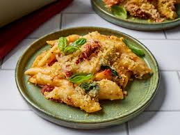

Chicken Pasta Bake

Description
This chicken pasta bake is super cheesy studded with bits of sun-dried tomato. Topped with extra cheese and crunchy herb-seasoned panko, it's easily a winner!
Ingredients
- 12 oz uncooked penne pasta
- 1 pound boneless, skinless chicken breasts
- 1 teaspoon freshly ground black pepper
- 2 1/2 teaspoons italian seasoning, divided
- 2 1/2 teaspoons kosher salt, divided
- 1 cup drained jarred julienne-cut sun-dried tomatoes
- 4 tablespoons oil from sun-dried tomato jar divided
- 1 1/2 cups finely chopped yellow onion
- 6 large garlic cloves, thinly sliced
- 1/3 cup dry white wine
- 2 tablespoons tomato paste
- 3 tablespoons unsalted butter
- 3 tablespoons all purpose flour
- 1 cup whole milk
- 5 oz fresh baby spinach
- 2 cups shredded low-moisture part-skim mozzarella cheese, divided
- 1/2 cup freshly grated Parmesan cheese, divided
- 1/2 cup panko
- fresh basil leaves
Steps
- Gather all ingredients. Preheat the oven to 350 degrees F (175 degrees C).
- Bring a large pot of water to a boil over high. Add pasta and cook, stirring occasionally, until al dente, 8 to 10 minutes. Reserve 1 cup of pasta cooking water. Drain pasta and transfer to an ungreased 13- x 9-inch baking dish.
- Season chicken breasts evenly with black pepper and 1 teaspoon each of the Italian seasoning and salt. Heat 2 tablespoons of sun-dried tomato oil in a large skillet over medium until shimmering. Add chicken breasts and cook until golden brown and a thermometer inserted into the thickest part registers 165 degrees F (73 degrees C), 10 to 15 minutes, flipping occasionally. Transfer to a cutting board and let rest 5 minutes. Thinly slice chicken and add to pasta in baking dish. Do not clean skillet.
- Add 1 tablespoon of the sun-dried tomato oil to skillet and return to medium heat. Add onion and garlic, and cook, stirring often, until softened, about 6 minutes. Add white wine, tomato paste, and 1/2 cup sun-dried tomatoes, and cook, stirring often, until liquid is reduced by half, about 2 minutes. Stir in butter until melted. Sprinkle flour over sun-dried tomato mixture and cook, stirring constantly, until thick and pasty, about 1 minute. Gradually stir in reserved pasta cooking water and milk.
- Cook, stirring often, until thickened and smooth, about 2 minutes.
- Add spinach, 1 teaspoon Italian seasoning, and remaining 1 1/2 teaspoons salt. Cook over medium, stirring constantly, until wilted and bright green, about 2 minutes. Remove from heat and stir in 1 cup of the mozzarella cheese and 1/4 cup of the Paremsan cheese until melted. Transfer to pasta mixture in baking dish and stir until well combined. Set aside.
- Heat remaining 1 tablespoon sun-dried tomato oil in a small skillet over medium-high. Add panko and remaining 1/2 teaspoon Italian seasoning, and cook, stirring constantly, until golden brown, about 2 minutes. Remove from heat. Sprinkle pasta mixture with remaining 1/2 cup sun-dried tomatoes, 1 cup mozzarella cheese, 1/4 cup Parmesan cheese, and toasted panko mixture.
- Bake in preheated oven until cheese is melted, about 15 minutes. Garnish with basil.
Home